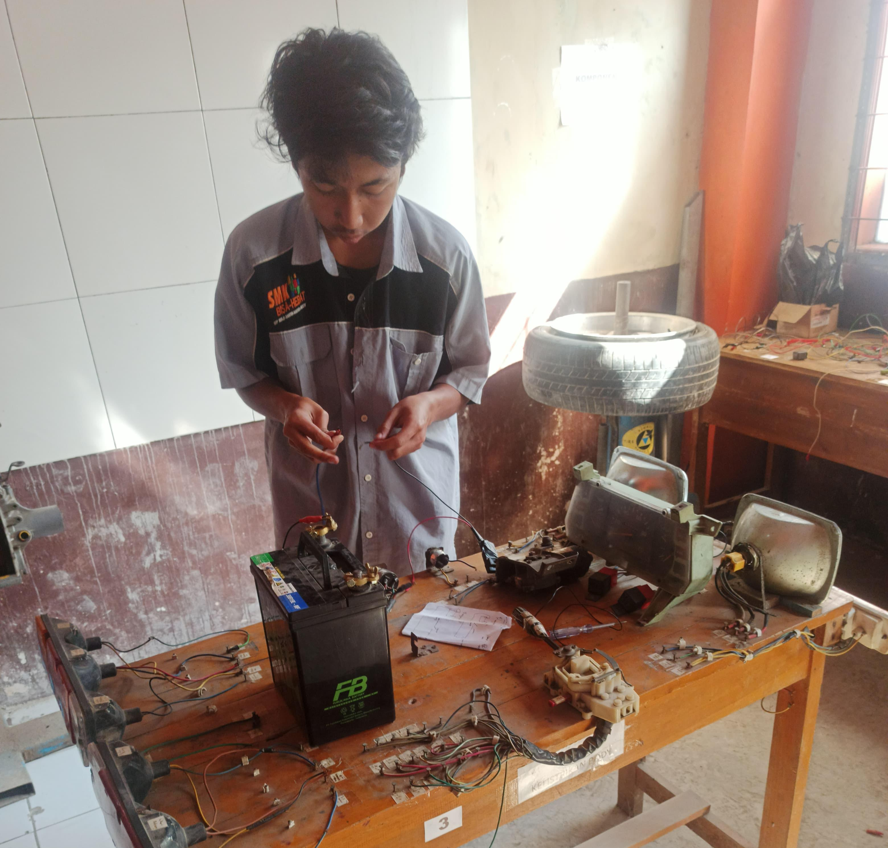

Kegiatan Jurusan
Teknik Komputer dan Jaringan (TKJ)
Praktikum Teknologi Layanan Jaringan
Siswa belajar konfigurasi software jaringan dan manajemen user.
Praktikum Administrasi Infrastruktur Jaringan
Siswa merakit dan mengatur perangkat keras jaringan (switch, router, server).
Praktikum Administrasi Sistem Jaringan
Siswa membuat kabel UTP dan memahami fungsi transmisinya.
Teknik Kendaraan Ringan (TKR)

Praktikum Mesin EFI
Siswa belajar sistem injeksi bahan bakar, sensor, dan aktuator.
Praktikum Sistem AC
Siswa mengenal komponen AC mobil dan cara perawatannya.

Praktikum Sistem Lampu
Siswa merakit sirkuit listrik dasar mobil, khususnya sistem lampu.